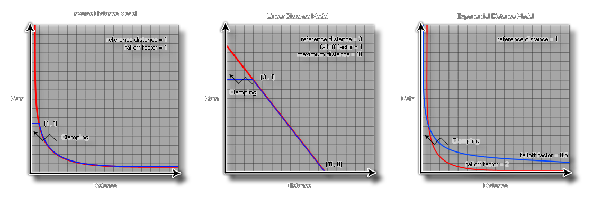

audio_falloff_set_model
Sets the model on which all falloff values will be calculated.
Syntax :
audio_falloff_set_model(model);
| Argument | Description |
|---|---|
| model | The constant used to set the falloff model. |
Returns : N/A
Description
To add more versatility to the audio engine, GameMaker:Studio permits you to select the falloff model that suits your game. This model will be used for all the audio functions in the game or app,
and so you should make sure that the model you choose is the correct one, as each one will affect how the listener perceives the sounds you play through emitters or with the function
audio_play_sound_at.
When setting falloff in your game with the appropriate functions there are three arguments that you will need to set, and each one is appropriate to a specific, model and will affect the way the final sound is "heard"
by the player depending on the distance that the listener is from the source. The three arguments are:
- reference distance - this is the distance from the listener the distance under which the volume for the sound playing would normally drop by half before being influenced by rolloff factor or the specified maximum distance.
- maximum distance - this sets the distance where there will no longer be any attenuation of the source sound. This can be the point at which the sound is no longer heard or the point at which the sound volume no longer decreases below the minimum threshold defined by the model chosen.
- falloff factor - The falloff factor is used in distance attenuation based on the inverse distance model and sets the final minimum threshold for a sound with falloff.
The falloff models that are affected by these arguments are represented in GameMaker:Studio by the following constants (the table shows the exact calculations used too):
| Constant | Function |
|---|---|
| audio_falloff_exponent_distance | gain = (listener_distance / reference_distance) ^ (-falloff_factor) |
| audio_falloff_exponent_distance_clamped | distance = clamp(listener_distance, reference_distance, maximum_distance) gain = (distance / reference_distance) ^ (-falloff_factor) |
| audio_falloff_inverse_distance | gain = reference_distance / (reference_distance + falloff_factor * (listener_distance ?reference_distance)) |
| audio_falloff_inverse_distance_clamped | distance = clamp(listener_distance, reference_distance, maximum_distance) gain = reference_distance / (reference_distance + falloff_factor * (distance ?reference_distance)) |
| audio_falloff_linear_distance | distance = min(distance, maximum_distance) gain = (1 ?falloff_factor * (distance ?reference_distance) / (maximum_distance ?reference_distance)) |
| audio_falloff_linear_distance_clamped | distance = clamp(listener_distance, reference_distance, maximum_distance) gain = (1 ?falloff_factor * (distance ?reference_distance) / (maximum_distance ?reference_distance)) |
| audio_falloff_none | gain = 1 |
The following graphs are visual representations of how the above constants work and affect the sound being played:

Example :
audio_falloff_set_model(audio_falloff_exponent_distance_clamped);
audio_play_sound_at(snd_Waterfall, x, y, 0, 100, 300, 1, true, 1);
The above code sets the falloff model and then plays the sound indexed in the variable "snd_Waterfall", which will be looped at it's room position, with a fall-off reference of 100, a falloff distance of 300, a falloff factor of 1 and a low priority.